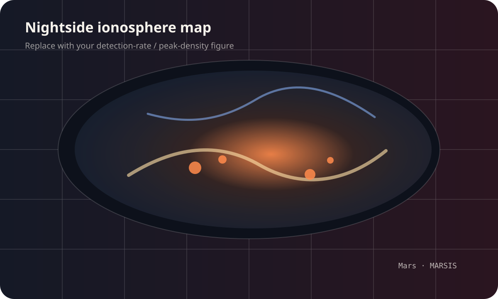
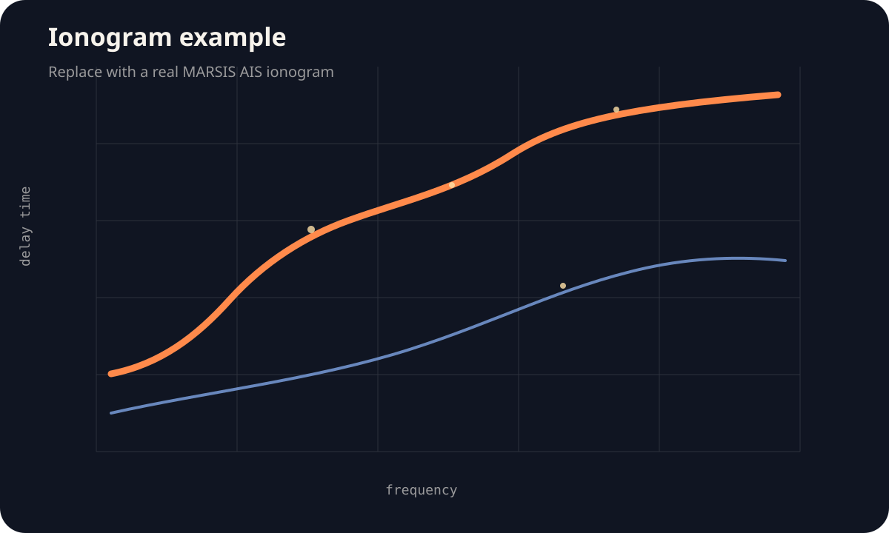
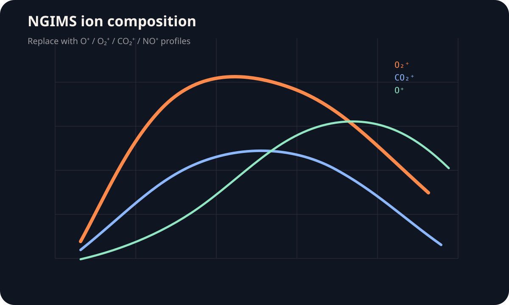

Nightside ionosphere map
Detection rate, peak density, or crustal field comparison map.
Replace these stylized placeholders with your actual research figures, simplified explanatory diagrams, ionograms, and map products.

Detection rate, peak density, or crustal field comparison map.

A clean example showing how nightside ionospheric signatures appear in AIS data.

Altitude profiles and species ratios from MAVEN/NGIMS nightside observations.